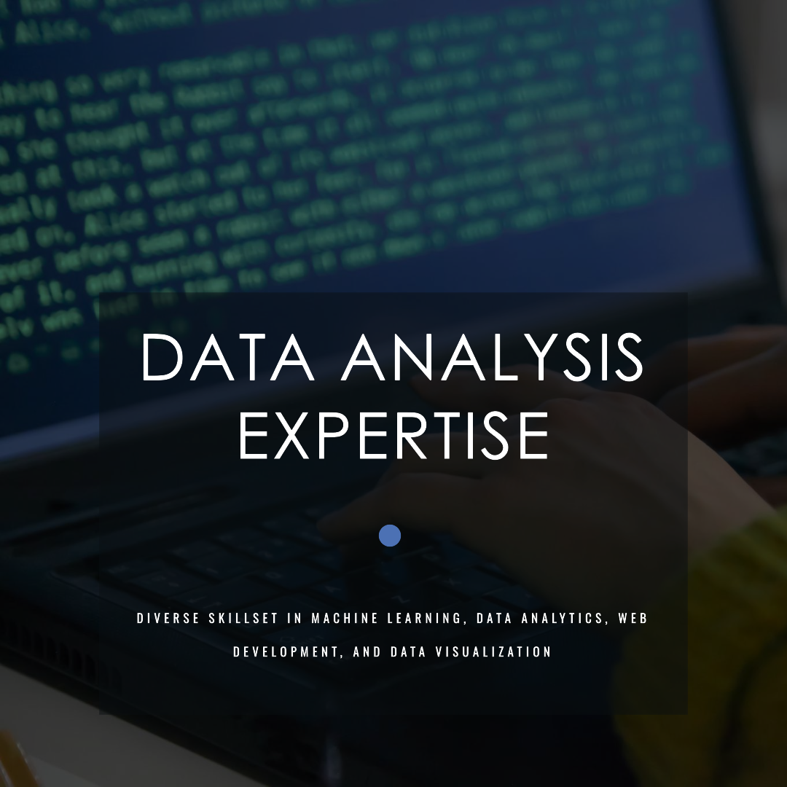

September 7, 2023
Over the past year, I have made significant contributions to several projects using Power BI, Microsoft Excel, Pyhton and R. The project includesHR Analytics , Fintech Customer Churn Analysis, Retail Price Analysis Optimization, Power Demand Modeling, and more. This consistent involvement demonstrates my commitment and passion for data analysis.
In summary, my GitHub repositories reflect a diverse skillset encompassing machine learning, data analytics, web development, and data visualization. My dedication to learning and contributing to various projects underscores my ability to adapt and excel in different data-related domains. I am confident in my skills and look forward to applying them effectively to future projects as well..


I'm really excited about the Fintech Product Customer Churn Analysis with Power BI project because it could be a game-changer for Fintech businesses. This project is all about figuring out why customers stop using Fintech products, and that's a big deal.
Why it's so important? Well, it helps companies understand why customers leave and, more importantly, what they can do to keep them. It's like solving a puzzle that can boost customer retention and make businesses perform better, especially in the competitive Fintech world.
So, what did I do? First, I made sure our data was super clean and accurate. Then, I used Data Analysis Expression (DAX) to write measures that give insight to churn insight. Then developed a dashbaoard in Power BI after to turn all that data into easy-to-understand graphs and charts. These visuals helped me see trends and reasons why customers say goodbye to Fintech products.
What's great is that I didn't just learn technical stuff. This project taught me how data can be a superpower for businesses. And here's the best part – the skills I picked up aren't just for Fintech. They can be used in all sorts of projects and industries, making data-driven decisions that help businesses succeed. It's like having a secret weapon!
I'm genuinely captivated by the "Power BI Desktop HR Dashboard - Full Insight by Lawrence" project for a multitude of compelling reasons. To begin, it offers a comprehensive understanding of the realm of data analytics and visualization, particularly in the context of HR data. What strikes me most is how effectively the project leverages Power BI, highlighting its potential to transform raw data into actionable insights.
What truly stands out is the project's ability to provide a holistic view of critical HR metrics. It delves into employee demographics, assesses promotion prospects, conducts in-depth service year analysis, examines job-level distribution, and even scrutinizes employee retention status. This wide-reaching approach offers an invaluable tool for HR decision-makers, empowering them with a wealth of information to steer HR management effectively.
Equally impressive is the project's interactive and visually appealing dashboard design. It not only simplifies data accessibility but also elevates the overall user experience. The incorporation of diverse visualizations, including graphs and charts, simplifies complex information, enabling swift decision-making.
Throughout my engagement with this project, I've encountered tasks spanning data cleaning, analysis, and visualization. These tasks collectively contribute to transforming raw HR data into actionable insights. This experience has been instrumental in honing my data analysis and visualization skills.
The skills I've cultivated through this project are exceptionally transferable. They extend beyond the realm of HR analytics, equipping me to tackle a diverse range of data-related challenges across various industries. This versatility is particularly exciting, as it enables me to contribute effectively to future projects by leveraging data-driven decision-making techniques.

The Retail Price Optimization project with Python was vital for our business's success in the competitive retail market. During this project, I did data cleaning in Microsfot Excel creating new calculated column and using formuleas. By optimizing prices, we boosted profits, strengthened our market presence, and cultivated loyal customer relationships. This project played a pivotal role in our journey to growth.
Personally, I acquired valuable skills in data analysis, Python programming, and retail price optimization throughout this project. These skills are versatile and can be applied across various industries, enabling me to contribute to data-driven decision-making and foster business growth in diverse sectors. Additionally, I used the decision tree algorithm for this project.

I embarked on the Customer Churn project within the SAAS sector with a clear objective: to elevate the quality of customer experiences while reducing churn. This undertaking involved a comprehensive approach, from meticulous data cleaning to in-depth exploration using Python.
Throughout this project, I not only honed my data analysis skills but also acquired proficiency in utilizing DAX (Data Analysis Expressions) to create measures, calculated tables, and measures, thereby enriching the depth of my analysis. This newfound knowledge is highly transferable and can be seamlessly applied to future projects across diverse industries.
Furthermore, the project emphasized the significance of teamwork and collaboration in driving positive outcomes. The insights gained from this experience, along with the skills developed, will continue to serve as invaluable assets in my journey towards contributing to data-driven decision-making and fostering growth in various projects and sectors.